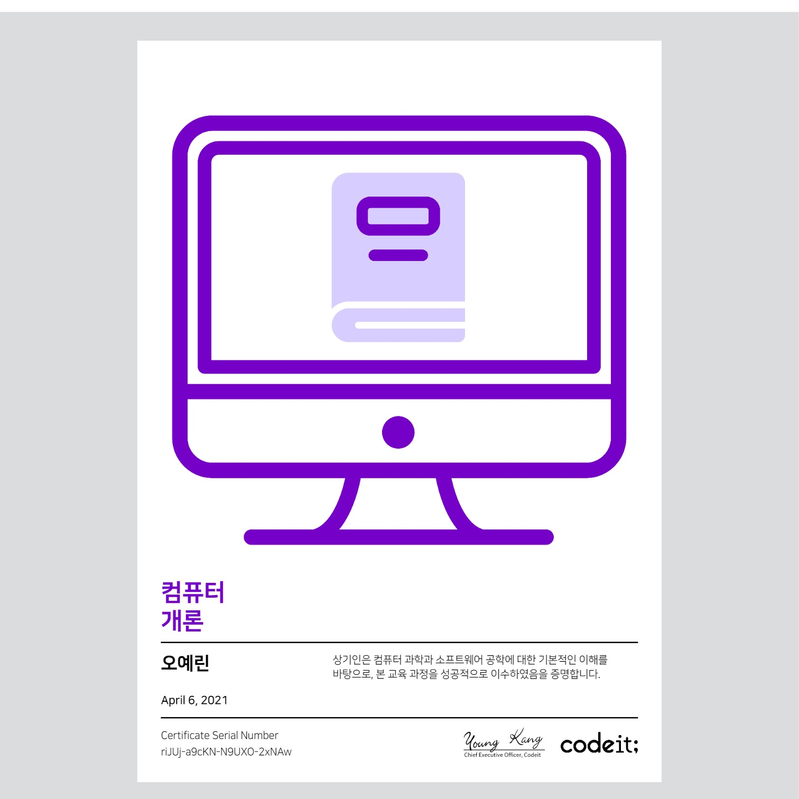
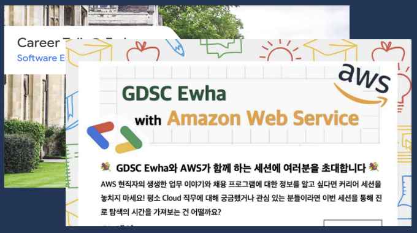
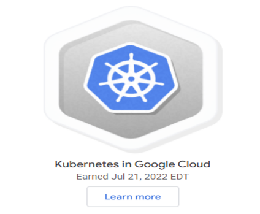
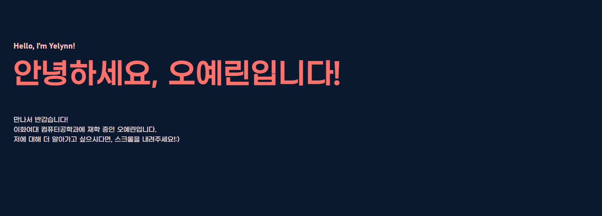

Hello, I'm Yelynn!
안녕하세요, 오예린입니다!
만나서 반갑습니다!
이화여대 컴퓨터공학과에 재학 중인 오예린입니다.
저에 대해 더 알아가고 싶으시다면, 스크롤을 내려주세요!:)
01. 스스로 다짐한 목표
My Goal
행동하는
감자되기
/*행동하는 감자란*/
/*모르는 것에 대해 부끄러워하지 않고 도전하는 자세*/
/*모르는 것은 집요하게 파해치는 자세*/
행동하는 감자가 되자! 이는 스스로가 감자라는 생각이 들며 일이 잘 풀리지 않을 때
다시 한 번 의지를 북돋기 위해 쓰는 말입니다.
모르는 게 많은 것 같아도 주저하지 말고 꾸준히 정진하자는 의미를 담고 있습니다.
저는 제 한계를 단정짓기 보다는 다양한 것을
접해보고 배워보려 노력하고 있습니다.
차근차근, 관심있는 분야를 탐색하는 과정에서 매일 새로움을 경험하며 발전하고 있습니다!X)
02. 공부한 내용들
What I Have Studied
대학교 코딩 캠프 3기 수료
대코캠 3기로 활동을 하며 '컴퓨터 개론' 강의를 이수하였습니다. 이를 통해 컴퓨터 과학과 소프트웨어 분야에 대한 지식을 얻을 수 있었고, 해당 분야에 관심을 쌓을 수 있었습니다. 대코캠 활동을 시작으로 다수의 IT 지식 도서, 컴퓨터 공학 관련 도서를 읽으며 관련 분야에 관한 기초 지식을 다져나갔습니다.
C언어 개인 스터디
1학년 방학을 이용해 C언어 기초를 공부했습니다. 주로 유튜브와 구글에서 찾은 자료들을 바탕으로 공부를 했습니다. 개념 강의를 듣고 실제 예제들을 풀어본 후, 구글링을 통해 다른 사람들의 코드를 찾아 비교해보며 공부를 하였습니다. '이 사람은 왜 이런식으로 코드를 짰지? 왜 여기서 이 개념을 사용했지?' 계속 질문을 하면서 기초 실력을 쌓아갔습니다. 이렇게 공부를 하며 전 이 분야에 발을 들인 이상 '스스로 검색하면서 공부하는 것'의 중요성을 실감할 수 있었습니다. (여전히 구글은 저의 큰 스승이기도 합니다:D)
개발자 진로 관련 세미나
현 소프트웨어 분야에 존재하는 다양한 진로들에 대해 알아보고 싶어 1학년 때부터 진로 관련 세미나들을 찾아 들었습니다. 교내 THE 포트폴리오에 열린 방구석 진로 콘서트(방진콘)에서 IT 대기업에 취직하신 선배의 경험담도 들어보고, SW 리더십 세미나 과목을 수강하며 개발자로서 지녀야할 태도에 대해서도 배우기도 했습니다. 또한, 계속 관심을 가지고 있던 동아리 GDSC(!) 에서 열린 GDSC x AWS 클라우드 커리어 세션을 들었습니다. 이 외에도 레디미에서 열린 웹서비스 웨비나, 개발자 취업 콘서트 등 교외에서 열리는 다양한 진로 세미나도 찾아가며 진로에 대한 고민을 해소해나갔습니다.
구글 클라우드 스터디 잼 이수
Google Cloud에서 주관하는 2022 구글 클라우드 스터디 잼 - 쿠버네티스 입문 과정을 수료하였습니다. '구쿠다스(구글 쿠버네티스 다모여 스터디의 준말입니다!)' 이름의 스터디 그룹을 구성해 팀블로그 정리, 세미나 활동을 하여 스터디를 진행하였습니다. 개인적으로도 많이 성장할 수 있었고, 팀 활동을 진행하는 방법에 대해서도 많이 배웠던 활동이라 유익했던 활동입니다.
식습관 기록하기 프로그램
개념 공부와 간단한 문제 풀이를 병행하며 Java를 공부하고 있었는데, 작은 개인 프로젝트를 구상해보자는 생각이 들었습니다. 그 중 제가 평소 필요하다고 생각했던 '식습관 기록일지'를 주제로 아침, 점심, 저녁, 간식으로 먹은 메뉴와 칼로리를 입력하고, 찾아보고, 수정하고, 삭제하는 기능을 구현하였습니다.
About Me 홈페이지
개발자로서 스스로를 소개할 수 있는 웹사이트를 개발해보고 싶다는 생각이 들어 개인적으로 가지고 있는 목표, 그 동안 공부한 내용들, 성격, 좋아하는 것들에 관한 내용을 담았습니다. HTML/CSS 기술을 이용해 정적인 웹사이트를 구현하였고, 반응형 디자인 기능도 구현을 해보았습니다.
03. 성격
My Personality
성실
평소 성실하다는 이야기를 많이 듣습니다.
주어진 일은 묵묵하고 성실하게 임하며,
꼼꼼하게 일을 처리하기 위해 노력합니다.
보통 팀 전체의 결과를 위하여
팀플을 진행할 때도 제 과제를 미리 끝내어
도움이 필요한 팀원들에게
도움을 주었던 적이 많습니다:)
목표지향적
뚜렷한 목표가 생기면
몰두를 하는 성격입니다.
그래서 목표를 이루기 위해
노력을 많이 합니다.
(About ME 프로젝트를 진행할 때도
매일 하루 종일 앉아 몰두했습니다 ㅎㅎ)
당일 할 분량의 과제 목표를 세우면,
그 당일날 해당 과제를 최대한
끝내는 성격입니다!
노력파
빠른 습득은 하지 못해도
꾸준히 열심히 하는 성격입니다.
해야할 일이 있다면 미리 시간을
들여 차근차근 노력하는 편입니다.
개인적으로, 투자한 시간의
절대적인 양은 무시할 수 없다고
생각하여
해야 하는 일에는
오랜 비율의 시간을 투자합니다!
막히는 상황이 생겨 잠시 쉬었다가도,
다시 일을 마치기 위하여 노력합니다:)
램프를 클릭해보세요!
04. 좋아하는 것들
What I LOVE!
어릴 적부터 상상한 것을 그림으로
표현하는 것을 좋아했습니다.
자주는 아니지만 꾸준히
그림을 그리고 있습니다:)
그림그리기
영화를 보는 것도 좋아하고
실제 제작에도 관심이 있어
영화 동아리에서
활동하기도 했습니다:D
영화보기
팝송, 아이돌 노래, 재즈 등등
가리지 않고 듣는 편이에요!
요즘 가장 많이 듣는 노래는
John K - Parachute입니다.
(매우 강추)
노래듣기
시원한 바람이 부는
맑은 바다를 좋아합니다!
바다
매일 아침 산책을 합니다!
걷는 것에 집중하다보면,
자연스래 생각들이 정리되는
느낌이라 좋아요X)
산책
네..
특히 고기왕만두를 애정합니다..
동네 만두집은 거의 다
가본 것 같네요!
최애 만두집을 찾기 위해 계속
만두탐방을 다니고 있습니다~!
만두
05. 감사합니다!
Thank You!
여기까지 읽어주셔서 감사합니다!
스스로 발전하기 위해 능동적인 삶을 살고 있는 '행동하는 감자' 오예린이었습니다!
꼭 좋은 기회로 뵈었으면 좋겠습니다:)